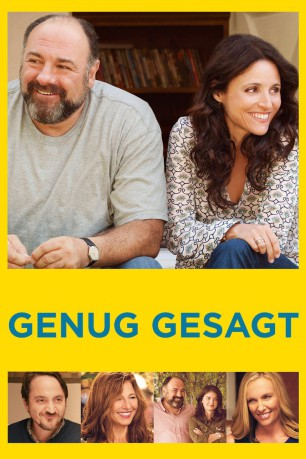
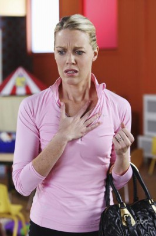

#1500 Genug gesagt
Alternativ: Enough Said
 
 IMDB-Wertung: 7.0 / 10
IMDB-Wertung: 7.0 / 10  Metascore: 78
Metascore: 78 
Eva ist geschieden und alleinerziehende Mutter einer Tochter, deren Weggang ans College bevorsteht, was Eva zu schaffen macht. Wenigstens ihre Arbeit als Masseurin lenkt sie ab, bis sie den lustigen und sympathischen Albert kennenlernt, der ebenfalls allein lebt und ihr wie ein Gleichgesinnter erscheint. Zwischen beiden beginnt eine wunderbare Romanze. Parallel freundet sich Eva mit Marianne, einer ihrer neuen Klientinnen, an, die eine begnadete Dichterin ist, aber etwas zu viel über ihren Ex-Mann herzieht. Als Eva die Wahrheit über Mariannes Ex erfährt, beginnt sie ihre Beziehung zu Albert, die anfangs so perfekt schien, anzuzweifeln ...
Jahr: 2013
Dauer: 93 Minuten
FSK: 6
Land: USA Studio: Fox Searchlight PicturesTonspuren: DTS - ,
Untertitel:
Auflösung: 1080p (1920x1040) Größe: 4526 MB
Genre: Komödie, Drama, Liebe
Regisseur: Nicole Holofcener
Drehbuch: Nicole Holofcener
Soundtrack: Marcelo Zarvos
Darsteller:
 Julia Louis-Dreyfus als Eva
Julia Louis-Dreyfus als Eva Lennie Loftin als Martin - Massage Client
Lennie Loftin als Martin - Massage Client-  Jessica St. Clair als Cynthia - Massage Client
- Christopher Nicholas Smith als Hal - Massage Client
- Tracey Fairaway als Ellen
 Toni Collette als Sarah
Toni Collette als Sarah Ben Falcone als Will
Ben Falcone als Will Michaela Watkins als Hilary
Michaela Watkins als Hilary Catherine Keener als Marianne
Catherine Keener als Marianne- Phillip Brock als Jason
 James Gandolfini als Albert
James Gandolfini als Albert- Tavi Gevinson als Chloe
- Nick Williams als Chris
- Rick Irwin als Rude Waiter
 Amy Landecker als Debbie
Amy Landecker als Debbie- Alina Adams als Grace
- Luke Grakal als Brandon
- Anjelah Johnson-Reyes als Cathy
- Barry Jenner als Crying Guy
 Eve Hewson als Tess
Eve Hewson als Tess Sarah Burns als Female Hiker #1
Sarah Burns als Female Hiker #1- Rebecca Drysdale als Female Hiker #2
- Rob Mayes als Waiter
 Toby Huss als Peter
Toby Huss als Peter Kathleen Rose Perkins als Fran
Kathleen Rose Perkins als Fran- Mark Roman als Restaurant Patron , uncredited
- Elizabeth Schmidt als Angry Driver , uncredited
- Ivy Strohmaier als Maddy
- Natasha Sky Lipson als Sage
- Rob Steiner als Angry Movie-Goer
- Alexa Hollander als High End Street Walker , uncredited
Datei: X:\2013(G-H)\Genug gesagt (2013, FSK6, 1920x1040).mkv seit 12.07.2015
Festplatte: HD 2012(N-Z)-2013(A-H)
 Es gibt insgesamt 43 Filme in der Gruppe '2013(G-H)'
Es gibt insgesamt 43 Filme in der Gruppe '2013(G-H)'